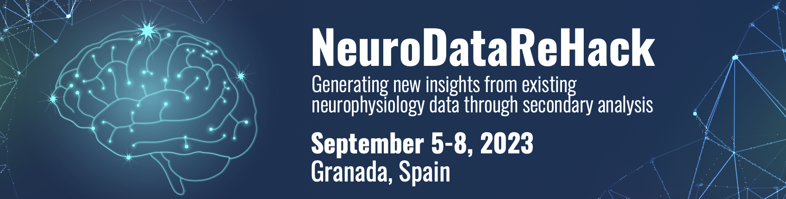
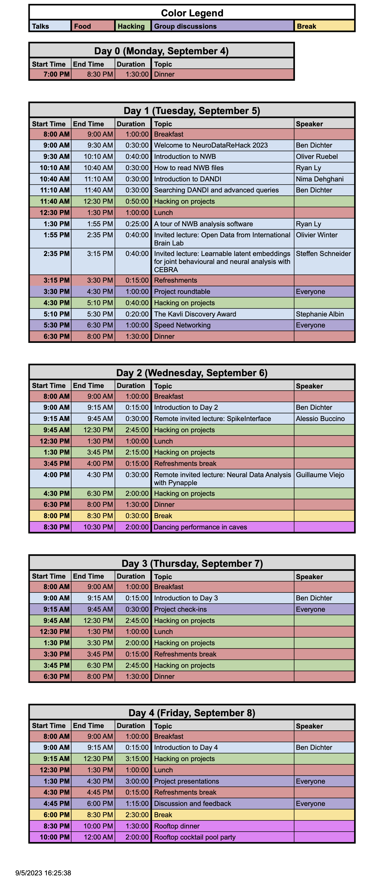

The final report for NeuroDataReHack 2023 is now available online at [PDF (GitHub)] [LaTeX (Overleaf)].
The DANDI Archive now has 110+ neurophysiology datasets in the Neurodata Without Borders format spanning many species, brain areas, task types, and imaging modalities. These include high-value datasets, e.g. from The Allen Institute, the MICrONS project, and the International Brain Laboratory, as well as diverse contributions from neuroscience labs around the world. In this workshop, we will teach attendees about the open neurophysiology datasets available on the DANDI Archive and train them on how to maximally utilize the archive and the NWB standard to incorporate existing data into their scientific workflows. Feedback from attendees will be used to improve the software and data standard to better enable reanalysis workflows.
Prior to the workshop, we are organizing Open Neurodata Showcase where attendees can meet the contributors behind the neurophysiology datasets and explore virtual posters. Visit the event page to sign up and read more about this feature event.
Example projects include but are not limited to:
Following the event, participants will be invited to apply for a Kavli Foundation Neurodata Discovery Award, which awards $50,000 (USD) of funding to continue data reanalysis projects that come out of the NeuroDataReHack event. Details about the Kavli Foundation Neurodata Discovery Award will be provided closer to the event.
This event is held as a satellite of the IBRO World Congress 2023 with the goal of making it more accessible to diverse participants who might not otherwise have the opportunity to participate in this workshop. Attendance of IBRO 2023 is not a requirement for application.
This event will primarily focus on analyzing existing data in NWB and on DANDI, not converting data to NWB. If you are interested in learning how to convert data, consider signing up for an NWB User Days event.
This course is intended for PhD students, postdoctoral researchers, principal investigators, or similar. Applicants should have basic programming experience in Python or MATLAB and experience with neurophysiology research.
Applications are now closed.
Space for the event is limited. Apply to attend NeuroDataReHack 2023 here.
Thanks to the generous sponsorship of The Kavli Foundation, this event will be free to participants:
Program chairs:
Resources will be posted here to help participants prepare for the event.
Bring a laptop with appropriate software installed. Python should be installed and MATLAB is optional. For instructions on how to install PyNWB, see the PyNWB documentation. For instructions on how to install MatNWB, see the MatNWB documentation
Tentative schedule:

This website and related content were prepared as an account of or to expedite work sponsored at least in part by the United States Government. While we strive to provide correct information, neither the United States Government nor any agency thereof, nor The Regents of the University of California, nor any of their employees, makes any warranty, express or implied, or assumes any legal responsibility for the accuracy, completeness, or usefulness of any information, apparatus, product, or process disclosed, or represents that its use would not infringe privately owned rights.
Reference herein to any specific commercial product, process, or service by its trade name, trademark, manufacturer, or otherwise, does not necessarily constitute or imply its endorsement, recommendation, or favoring by the United States Government or any agency thereof, or The Regents of the University of California. Use of the Laboratory or University’s name for endorsements is prohibited.
The views and opinions of authors expressed herein do not necessarily state or reflect those of the United States Government or any agency thereof or The Regents of the University of California. Neither Berkeley Lab nor its employees are agents of the US Government.
Berkeley Lab web pages link to many other websites. Such links do not constitute an endorsement of the content or company and we are not responsible for the content of such links.